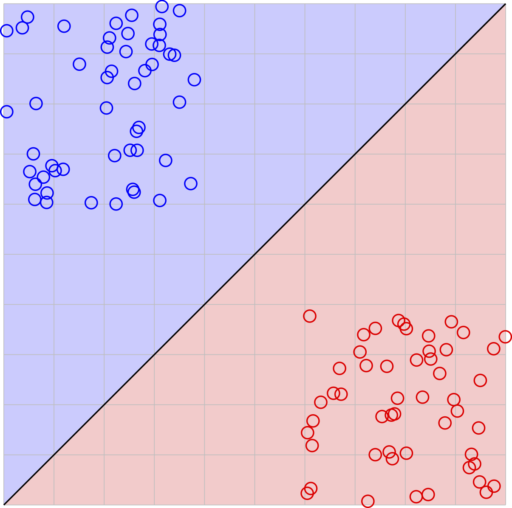
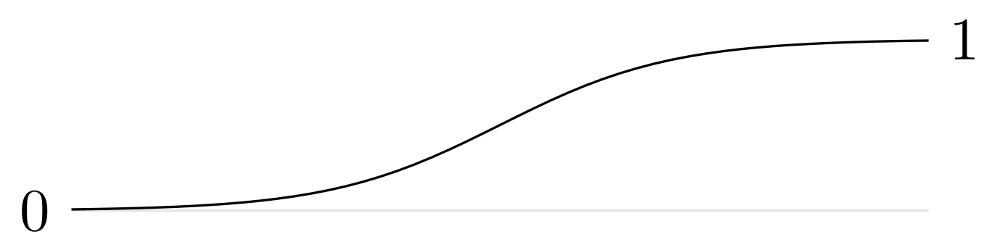
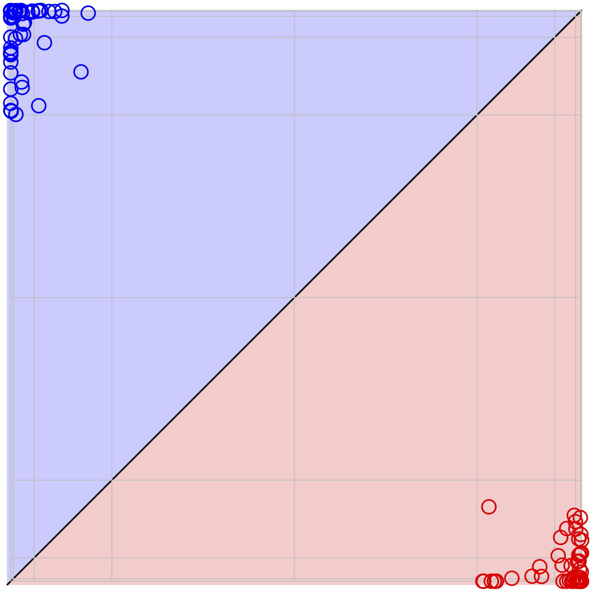

The mathematics of supervised neural networks
closingsquarebracket
Neural networks have found tremendous success in classifying data sets such as images, texts and sound fragments. A particular way to establish such a classification is through a process called supervised learning. In this process the network is presented with a set of data points and the corresponding categorisation. Through an iterative process, the network is able to approximate the connections inherent to the data sets. For practical applications of neural networks it is expected that the map generalises to other points. Effectively, a point \(x+\epsilon\) close to an original point is assumed to belong to the same category. The definition of "close" is loose but it excludes cases such as hash functions, where two neighbouring points are in no relation to each other after the application of the hash function.
A neural network is used to make a connection between a data input space and a categorisation space. Generally, both spaces are standard vectors space, i.e. \(\mathbb{R}^n\). The data on both the input and the output are embedded in their spaces as discrete points. The purpose of the neural network is to find an approximation to the known map \(\mathbf{T}\) that correctly maps points from the data space to the categorisation space, meaning: \begin{align} \mathbf{T}:&\,\phantom{\ni x_i}\mathbb{R}^f \mapsto \mathbb{R}^l\nonumber\\ \mathbf{T}:&\mathbb{R}^f \ni x_i \to y_i \in \mathbb{R}^l \end{align} where \(\mathbb{R}^f\) and \(\mathbb{R}^l\) are the feature (data) and label (categorisation) space respectively and \(i\) is an index that runs over the data points. This ideal map provides a categorisation for each input. Consider for example data points in \(\mathbb{R}^2\), as shown in the figure on the side.
The data set after the applying a linear transformation. The grid is subject to the same transformation as the data. The categorisation space is also two-dimensional, with each data point carrying a value of either red \((\begin{smallmatrix} 1\\0\end{smallmatrix})\) or blue \((\begin{smallmatrix} 0\\1\end{smallmatrix})\). All of the known data points therefore carry two sets of values, a two-dimensional position in within the figure and a two-dimensional description that uniquely identifies the color. This set is the known map \(\mathbf{T}\). However, this map is not very useful in practice because it can only provide information for points that are known, it caries no information about points outside of the set. In the given example, \(\mathbf{T}\) only contains a list of pairs of \(x, y\) coordinates and the corresponding colour and it can make no prediction about any point in the data space, as illustrated in the table below.
| \(\mathbf{T}\) | features | labels |
|---|---|---|
| \(d_1\) | \(x_1^1, x_1^2, \ldots x_1^f\) | \(y_1^1, y_1^2\ldots y_1^l\) |
| \(d_2\) | \(x_2^1, x_2^2, \ldots x_2^f\) | \(y_2^1, y_2^2\ldots y_2^l\) |
| \(\vdots\) | \(\vdots\) | \(\vdots\) |
| \(d_n\) | \(x_n^1, x_n^2, \ldots, x_n^f\) | \(y_n^1, y_n^2, \ldots, y_n^l\) |
An approximation \(T\) to the known map \(\mathbf{T}\) may not be able to reproduce the clear \((\begin{smallmatrix} 1\\0\end{smallmatrix})\) or \((\begin{smallmatrix} 0\\1\end{smallmatrix})\) vectors as seen in the known map. In the neural network, needs to be a selection criteria to decide whether a point \(y_i = T(x_i)\) belongs to either the red or the blue category. Since the dimension number is the criterion that decides which category the data point belongs to, it makes sense to choose the category with the largest value (in the case where the categories are mutually exclusive) or where the value of the dimension is larger than a cut-off value (meaning that potentially several categories can be chosen at the same time). Both choices are valid even after normalisation of the vector length. In this example, the points are categorised based on the dimension carrying the largest value.
The data set after the applying a linear transformation. The grid is subject to the same transformation as the data.Now that there is a way of choosing the category, the known map \(\mathbf{T}\) can be approximated. Since both the data space and the categorisation space are well-behaved vector-spaces, the known map can be approximated by matrices. The approximation \(T\) can be represented as matrix \(w\) and bias vector \(b\) as \begin{align} T_\text{linear}:&\mathbb{R}^f \mapsto \mathbb{R}^l\nonumber\\ T_\text{linear}:&\mathbb{R}^f \ni x_i \to (w x_i + b) \in \mathbb{R}^l \end{align} In this map, the matrix \(w\) has dimensions \(f \times l\) and the bias is \(l\)-dimensional. In the case of example presented above, the approximation is sufficient as the two areas of data points simply need to be rotated to be correctly classified. This is shown in the accompanying figure, with the areas of categorisation drawn in.
While this solution certainly manages to separate the data, quite a number of data points are still a large distance away from the true value of \((\begin{smallmatrix} 1\\0 \end{smallmatrix})\) or \((\begin{smallmatrix} 0\\1\end{smallmatrix})\). In order to improve the agreement between the approximation \(T\) and the desired outcome \(\mathbf{T}\), one introduces non-linearity. The aforementioned map \(T: x\to wx+b\) changes to \(T: x\to \sigma(wx+b)\), where \(\sigma\) is called the activation function. The activation function is applied to each entry, meaning: \begin{align} \sigma(\vec{x}) = \sigma \begin{pmatrix} x_1 \\ x_2 \\ \vdots\\ x_n\end{pmatrix} = \begin{pmatrix} \sigma(x_1)\\ \sigma(x_2) \\\vdots\\ \sigma (x_n)\end{pmatrix} \end{align}
There are a number of different activation functions in use. A convenient function to use in this context is the sigmoid function (logistic function) \(\sigma(x) = 1/(1+\exp(-x))\). This function can be used to restrict the image of the map to one that coincides with the known labels. Values that are large are restricted to \(1\) and small ones restricted to \(0\). By multiplying the previously found matrix \(w\) with a large number and then applying the function, the function \(T\) approximates the known map \(\mathbf{T}\) very well.
 \[\sigma_\text{sigmoid}(x) = {1 \over 1+e^{-x}}\]
The data set after the applying the non-linear transformation. The grid indicates equal sizes in the untransformed space.The final approximation is shown in the next figure. As expected, the data points cluster towards the ideal values of \((\begin{smallmatrix}1\\0\end{smallmatrix})\) and \((\begin{smallmatrix} 0\\1\end{smallmatrix})\). Also observe how the space is stretched. The grid in the data space in both figures is the same, and illustrates how the \(\sigma_\text{sigmoid}\) transformation stretches the space such that \(T\approx \mathbf{T}\) for the known data points \(x_i\).
The solution here raises two questions: How does the computer "know" how to move the points around and what happens in more complex arrangements of data that are not linearly separable?
Error determination and matrix adjustment
In order to find a map \(T\) that approximates the known map \(\mathbf{T}\) well, one needs to know the difference or rather the error between the two. Consider some map \(T: x\to \sigma(wx+b)\) as described above. For each known data point \(x_i\) that is mapped into the categorisation space \(T: x_i \to y_i\), there is a difference to the correct categorisation \(y_\text{true}\), in the above example this is \(y_\text{red} = (\begin{smallmatrix} 1\\0\end{smallmatrix})\) or \(y_\text{blue} = (\begin{smallmatrix} 0\\1\end{smallmatrix})\). The error between the predicted categorisation value \(y_\text{pred} = T(x_i)\) and the true categorisation \(y_\text{true}\) can be expressed with an error function, \(E(y_\text{pred}, y_\text{true})\). The choice of the error function depends on the problem in question, however it needs to be differentiable. The requirement of differentiability is necessary because one can use the derivative of the error to change both \(w\) and \(b\) to yield a better approximation of the known map \(\mathbf{T}\). Consider the derivative of the error with respect to \(w\):The derivation for the bias vector \(b\) is analogous. \begin{align} \frac{\partial E}{\partial w} = \frac{\partial E}{\partial \sigma} \frac{\partial \sigma}{\partial w}\label{eq:simpleupdate} \end{align} Since both the error function \(E\) and the activation function \(\sigma\) are required to be differentiable, it is possible to obtain the gradient for the matrix, i.e. the direction of largest change. A change of \(w_\text{new} = w - \eta \frac{\partial E}{\partial w}\), where \(\eta\) is a regulating constant (the learning rate), will reduce the error between the current value in the categorisation space, \(y_{\text{pred}, i} = T(x_i)\) and the desired value, \(y_{\text{true}, i} = \mathbf{T}(x_i)\). Hence by going through all data points in the training set, the neural network is able to approximate the known map to a sufficient degree. Moreover, since \(T\) is a continuous map, it is able to make predictions about nearby points \(x+\epsilon\) close to known data points.
Layer of networks
The solution presented above works well when data is linearly separable, meaning that the data can be categorised based on a matrix transformation followed by a non-linear transformation of the resulting space.
It is obvious that stretching and warping space alone will not always separate data points belonging to the same category. One can attempt to correctly classify data by moving to higher or lower dimensions. This is the idea behind layers of a network. Instead of using a single transformation \(T:\sigma(wx+b)\), several are concatenated as: \begin{align} T_1\circ T_2&: \mathbb{R}^f \to \mathbb{R}^n \to \mathbb{R}^l\nonumber\\ T_1\circ T_2&: x_i \in \mathbb{R}^f \mapsto x_i \in \mathbb{R}^n \mapsto x_i \in \mathbb{R}^l \end{align} The intermediary space \(\mathbb{R}^n\) does not need to have the same dimensionality as the surrounding ones. This allows to rotate and stretch in higher dimensions, with restrictions. A map \(T: \mathbb{R}^m \to \mathbb{R}^n\) with \(m\lt n\) is injective, the opposite \(T:\mathbb{R}^m \to \mathbb{R}^n\) with \(m\gt n\) is surjective. In particular in linear cases, \begin{align} T_\text{linear} &:\mathbb{R}^m \to \mathbb{R}^n\nonumber\\ T_\text{linear} &: \mathbb{R}^m \ni x \mapsto wx+b \in \mathbb{R}^n \end{align} the relative alignment of the data points \(x_i\) is preserved in the new space. Consider the figure below, where a linear transfer of an arrangement of data points is shown, as \(T:\mathbb{R}^2\to \mathbb{R}^3\to \mathbb{R}^2\), with no application of an activation function \(\sigma\). When moving from a smaller to a larger dimension, the data points remain in a hyperplane equivalent to the prior dimension; Coming from two to three dimensions, all data points \(x_i \in \mathbb{R}^2\) are mapped to a plane in \(\mathbb{R}^3\). This is an injective map since not all possible values in the target space \(\mathbb{R}^n\) have a source. Conversely, the map \(\mathbb{R}^m\to \mathbb{R}^n\) with \(m>n\) is surjective, (infinitely) many data points get projected to the same data point in the target space.
The second, surjective case appears very often in real-life applications of neural networks. Generally, there is a large disparity between the input dimension and and the number of classifications of that data, i.e. the dimensionality of the label space. By effectively projecting down a huge number of dimensions to the classifications, it becomes possible to create a map that correctly classifies the original data points \(x_i\) but also generalises to points \(x_i + \epsilon\).
This concept of iterating the map \(T\) by passing through different vector spaces is of course not limited to length \(2\). The concept of "deep" neural networks refer to the fact that there are many layers to a neural network. This is represented as \begin{align} T= T_1 \circ T_2 \cdots T_n:& \mathbb{R}^f \to \mathbb{R}^{(2)}\to \ldots \to \mathbb{R}^{(n-2)} \to \mathbb{R}^l \end{align} where the bracketed numbers indicate the number of the space rather than its dimension.
Deep neural networks can discern categories based on increasingly complex relations. Recent developments in machine learning research have also added layers that work by comparing adjacent pixels or can take sequential data into account.
Layer of networks
With more layers, there are also more matrices to updated. While the last layer can be updated as shown in the preceeding equations, layers before that need to change depending on the following layer. The gradient update propagates backwards through the layers in a process termed "backpropagation". The update of a layer \(T_n\) is calculated with respect to the derivative of the next layer \(T_{n+1}\).
A pdf of this article suitable for printing is available here
Layout taken from the tufte-css team under MIT license.